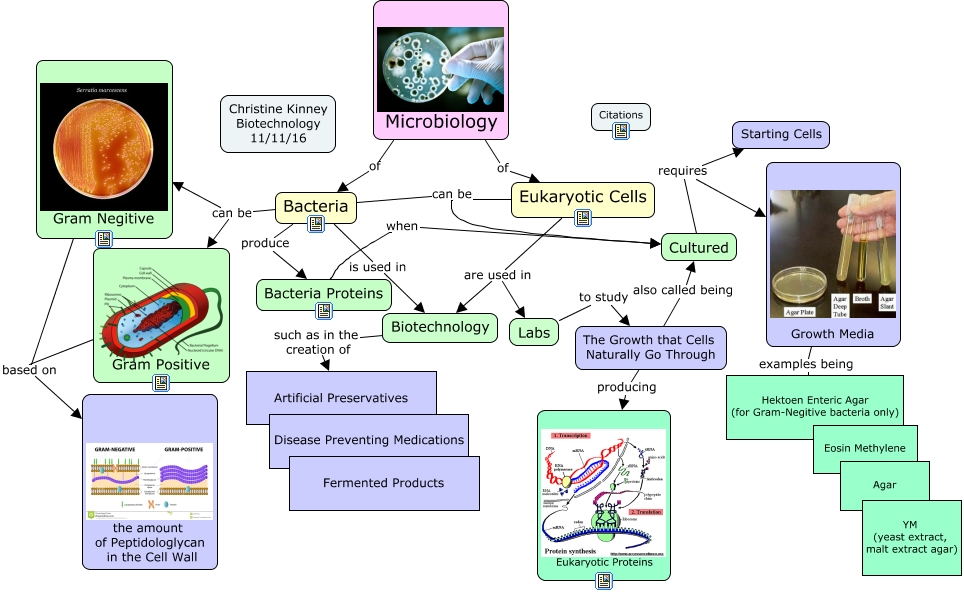

WARNING:
JavaScript is turned OFF. None of the links on this concept map will
work until it is reactivated.
If you need help turning JavaScript On, click here.
This Concept Map, created with IHMC CmapTools, has information related to: Chapter 3, Bacteria is used in Biotechnology, Bacteria Proteins when Cultured, Microbiology of Bacteria, Eukaryotic Cells are used in Biotechnology, Gram Positive based on the amount of Peptidologlycan in the Cell Wall, Eukaryotic Cells are used in Labs, Microbiology of Eukaryotic Cells, Bacteria can be Gram Positive, Cultured requires Starting Cells, The Growth that Cells Naturally Go Through also called being Cultured, Biotechnology such as in the creation of Artificial Preservatives, Bacteria produce Bacteria Proteins, Bacteria can be Cultured, Growth Media examples being Hektoen Enteric Agar (for Gram-Negitive bacteria only), Gram Negitive based on the amount of Peptidologlycan in the Cell Wall, The Growth that Cells Naturally Go Through producing Eukaryotic Proteins, Bacteria can be Gram Negitive, Eukaryotic Cells can be Cultured, Labs to study The Growth that Cells Naturally Go Through, Cultured requires Growth Media
